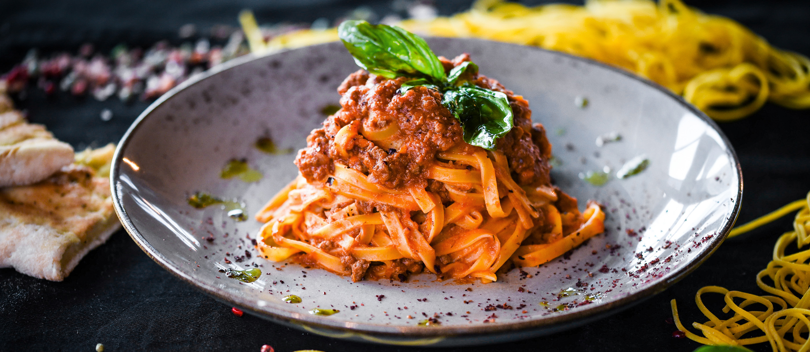

Pasta alla Bolognese

Description
The Italian classic recipe with pasta and tomato sauce
Ingredients
- 1 Tbsp. olive oil
- 1 medium onion, finely chopped
- 1 carrot, finely chopped (optional)
- 1 rib celery, finely chopped (optional)
- 1/4 cup dry red wine or beef broth
- 1/2 lb. ground beef
- 1 jar Bertolli® Five Cheese with Asiago & Fontina Cheeses Sauce
- 8 ounces penne pasta, cooked and drained
- Heat olive oil in 12-inch nonstick skillet over medium-high heat and cook onion, carrot and celery, stirring occasionally, 5 minutes or until vegetables are tender.
- Stir in wine and cook 1 minute.
- Add ground beef and cook, stirring occasionally, until almost done.
- Stir in Sauce. Bring to a boil over high heat.
- Reduce heat to low and simmer uncovered, stirring occasionally, 5 minutes or until ground beef is done.
- Serve over hot penne.